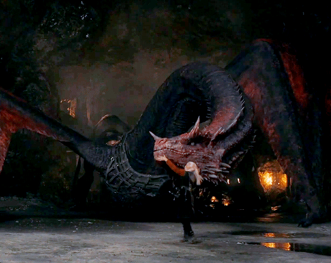
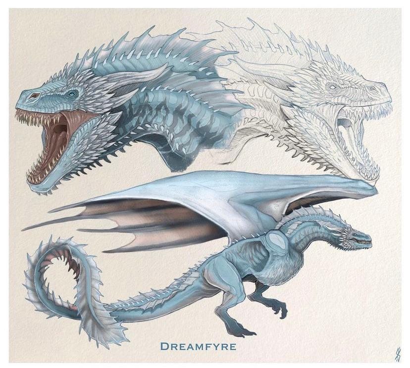
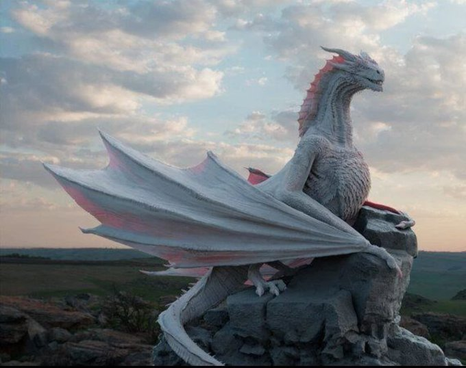
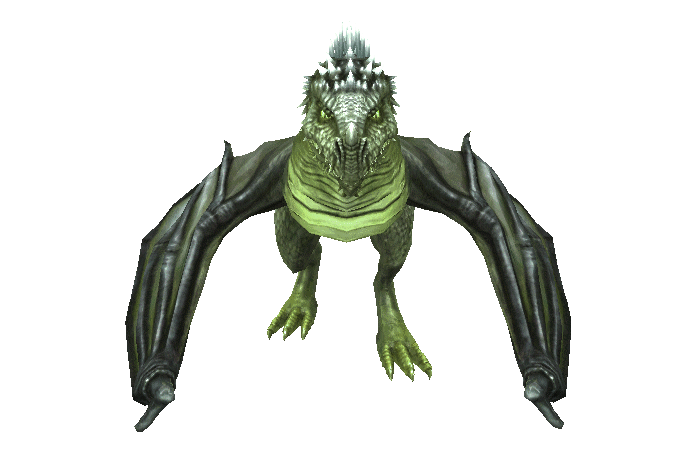
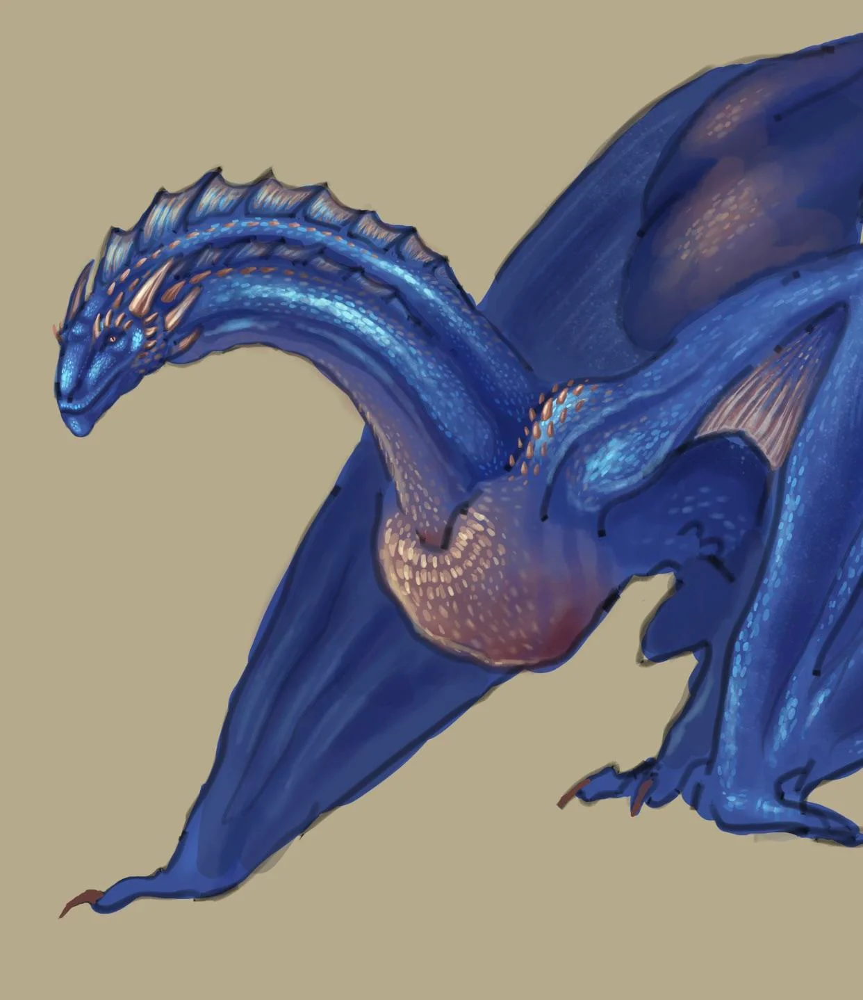
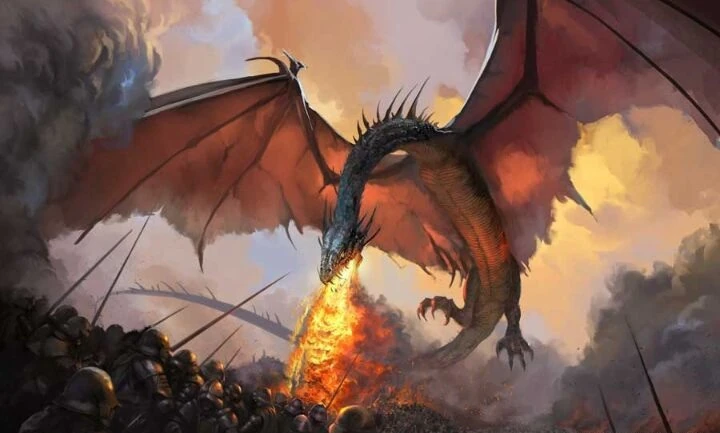
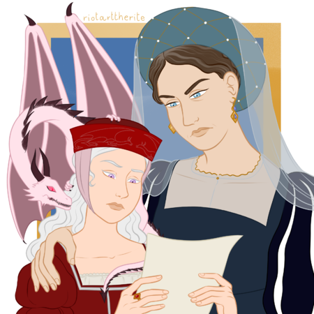

Druhorodený syn Viserysa Targaryena a Alicent Hightower síce prišiel o oko, no získal momentálne najväčšieho draka vo Westerose – dračicu Vhagar.
Spravil naozaj všetko pre to, aby túto starú, no silnú a obrovskú dračicu získal, a tak sa z Aemonda Targaryena teraz stal
naozaj najsilnejší a najobávanejší jazdec, ktorý lieta po oblohe. Len málo iných dračích jazdcov sa mu dokáže postaviť a prežiť to.
Pred ním na Vhagar jazdili Visenya Targaryen, Baelon Targaryen a Laena Velaryon.
2. Rhaenys Targaryen - MELEYS
Kráľovná, ktorá nebola, je dcérou Aemona Targaryena a Jocelyn Baratheon.
Rhaenys Targaryen, manželka Corlysa Velaryona, má skvelé vystupovanie a maniere. Jazdí na dračici Meleys, ktorá predtým patrila Alysse Targaryen.
Jazdkyni a ani dračici nie je radno postaviť sa do cesty, keďže obe sú skvelými bojovníčkami.
A čo viac, Meleys sa častokrát považuje za najrýchlejšiu dračicu vo Westerose, čo určite nie je na škodu.
3. Daemon Targaryen - CARAXES

Brat kráľa Viserysa a najmladší syn Baelona Targaryena a Alyssy Targaryen je nebezpečným a prefíkaným bojovníkom,
ktorý nedodržiava žiadne pravidlá. Daemon Targaryen jazdí na drakovi menom Caraxes, ktorý predtým patril Aemonovi Targaryenovi.
Ide o skúseného a hrôzostrašného draka, ktorý patrí k najväčším, no aj najrýchlejším drakom a Čiernym
tak dáva spolu so svojím jazdcom veľkú výhodu.
4. Helaena Targaryen - DREAMFYRE

Dcéra Viserysa Targaryena a Alicent Hightower, Helaena Targaryen, je
snílkom žijúcim vo vlastnom svete. Občas sa jej podarí predpovedať nejaké udalosti, ale inak je so
svojou milou, úprimnou povahou len vo svojich myšlienkach. Jej dračicou, s ktorou má silný vzťah, je Dreamfyre,
ktorá predtým patrila Rhaene Targaryen.
Je to staršia, nesmierne silná a nebezpečná dračica, ktorá je veľkou pomocou Zeleným.
5. Jacaerys Velaryon - VERMAX
Prvorodeným synom Laenora Velaryona (resp. Harwina Stronga) a Rhaenyry Targaryen je
Jacaerys Velaryon, ktorý by po matke mal jedného dňa nastúpiť na Železný trón. Je jazdcom na menšom,
no silnom a zdravom drakovi Vermaxovi. Obaja budú veľmi dôležití pre Tanec drakov,
pričom ak sa Vermaxova odolnosť spojí s Jaceovov obrannou povahou, dokážu veľké veci.
6. Aegon Targaryen - SUNFYRE
Kráľ Westerosu (podľa Zelených) a prvorodený syn Viserysa Targaryena a Alicent Hightower,
Aegon Targaryen, sa nielen že volá podľa slávneho dobyvateľa, je ešte aj jazdcom najkrajšieho draka menom Sunfyre.
Toho sme videli v seriáli iba na chvíľku, no keď sa
spojí so svojím jazdcom, vedia byť neľútostný pár. Aj napriek svojmu mladému veku je totiž poriadne veľký.
7. Rhaenyra Targaryen - SYRAX
Rhaenyra Targaryen, dcéra kráľa Viserysa Targaryena a Aemmy Arryn, jazdí na
dračici menom Syrax. Ide už o pomerne veľkú dračicu, ktorá však posledné roky trávi väčšinu času v dračej jame a
Rhaenyra na nej jazdí iba občas. V minulosti na nej ale lietala častejšie a
tak majú medzi sebou silné puto. Ide o dračicu hodnú kráľovnej Westerosu (aspoň podľa Čiernych).
8. Laenor Velaryon - SEASMOKE

Syn „morského hada“ Corlysa Velaryona a Rhaenys Tagraryen, ktorý momentálne žije na Essose so
svojim priateľom. Laenor Velaryon bol ženatý s Rhaenyrou Targaryen až do svojej nafingovanej smrti a jazdil na
drakovi menom Seasmoke. Nejde o najväčšieho draka v sérii, no aj tak dokázal, že dokáže byť silným
bojovníkom a nedostatok veľkosti si kompenzuje pohyblivosťou.
Laenor si už na ňom nezajazdí, no určite nebol jeho posledným jazdcom.
9. Lucerys Velaryon - ARRAX
Druhorodeným synom Laenora Velaryona (resp. Harwina Stronga) a Rhaenyry Targaryen je mladý,
no odvážny mladík Lucerys Velaryon. Okrem toho, že práve on pripravil Aemonda Targaryena o oko, je jazdcom draka Arraxa.
Ten je podobne ako Moondancer stále ešte malým drakom, čo znamená,
že nie je veľmi veľkou hrozbou, no stále dokáže aspoň voziť svojho jazdca.
10. Baela Targaryen - MOONDANCER

Na poslednom mieste sa umiestnila dcéra Daemona Targaryena a Laeny Velaryon, Baela
Targaryen. Jej dračicou je Moondancer, ktorá však nepatrí medzi najsilnejšie, keďže je ešte veľmi mladou.
Je však dosť veľkou na to, aby dokázala uniesť svoju jazdkyňu, a tak bude síce nie veľkou, no istou podporou Čiernych v
Tanci drakov. Dračicu sme zatiaľ v seriáli nevideli, no určite sa ukáže v ďalšej sérii.
Draci bez jazdcov:
Vermithor
Jeden z najväčších drakov (3.-tí v poradí po Balerionovi a Vhagar) v histórii Západozemia (Westerosu). Patrila kráľovi Jaeharysovi I.
Tessarion

Tessarion bola krásna modrá dračica. Jej krídla boli čierne ako kobalt. V Tanci Drakov bola
najmladším drakom ktorý patril k Zeleným - k Aegonovi II. Targaryenovi. Jej jazdcom je Daeron Targaryen, avšak ešte na nej nikdy nejazdil.
Tyraxes

Tyraxes je zviazaný s jazdcom Joffreyom Velaryonom za času Tanca Drakov. V čase vojny
ešte nie je dostatočne veľký na boj, avšak dokáže zaletieť dlhé vzdialenosti so svojím jazdcom.
Morning

Morning je dračica, ktorá sa vyliahla v čase Tanca Drakov. Patrí Lady Rhaene Targaryen,
dcére Daemona Targaryena a Lady Leany Velaryon. Je jemnej ružovej farby s čiernymi rohmi. Počas roku 135 AC bola dostatočne
veľká, aby na nej Rhaena jazdila.
Stormcloud
Stormcloud je mladý drak, prepojený s princom Aegonom Mladším.
Morghul
Morghul je mladý drak, prepojený s Jaehaerou Targaryen. Nikdy však na ňom nejazdila.
Shrykos
Mladá dračica, prepojená s Jaeherysom Targaryen. Zomrela na zásah sekerou do hlavy.